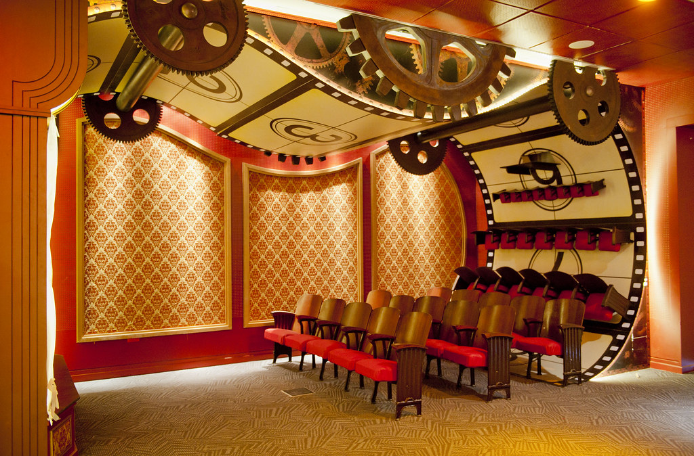
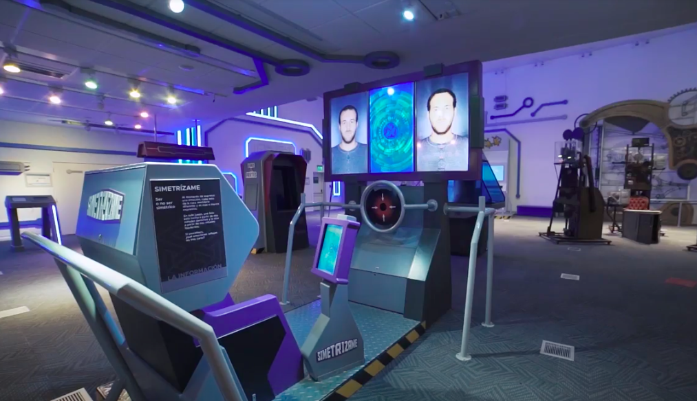

Lugar a dudas.
El tiempo, el azar y la información son los tres ejes alrededor de los cuales esta muestra fue creada.

El Tiempo
Siglos, años, instantes y segundos. ¿Qué es el tiempo? ¿Una ilusión? ¿Es acaso una dimensión fundamental en la naturaleza? Tan invisible como esencial, el tiempo sabe de culturas, historias, percepciones, mediciones y convenciones.
El Azar
¿Será la suerte o el destino? El azar fascina a científicos, filósofos, escritores, músicos y cineastas, así como a todo aquel que se pregunte por cuestiones tan cotidianas como esenciales. ¿Cuán probable es que existamos? ¿Qué fenómenos en la naturaleza somos capaces de predecir? ¿Puedo conocer el futuro de la vida? ¿Existe orden en el azar?
La Información
Pensar en el concepto de información es un reto desafiante que se opone a la inmensa cantidad de veces que utilizamos ese término. ¿Todo lo que se dice es información? ¿Qué es la información para la ciencia? ¿Cómo se comunican las personas entre sí? Signos, señales, lenguaje y códigos son un glosario para abrir la puerta a un mundo inmenso que admite tantos caminos como especies en la naturaleza

Ubicación
-
- Horarios de atención
- Viernes a Domingo de 12 a 19 hs
- Dirección
- Godoy Cruz 2270 , CABA
- Contacto
- Información: ccciencia.gob.ar
-
-